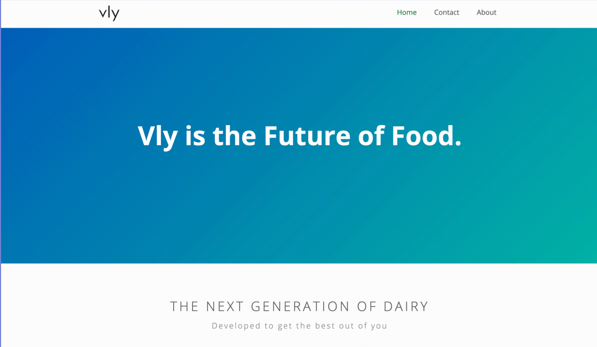
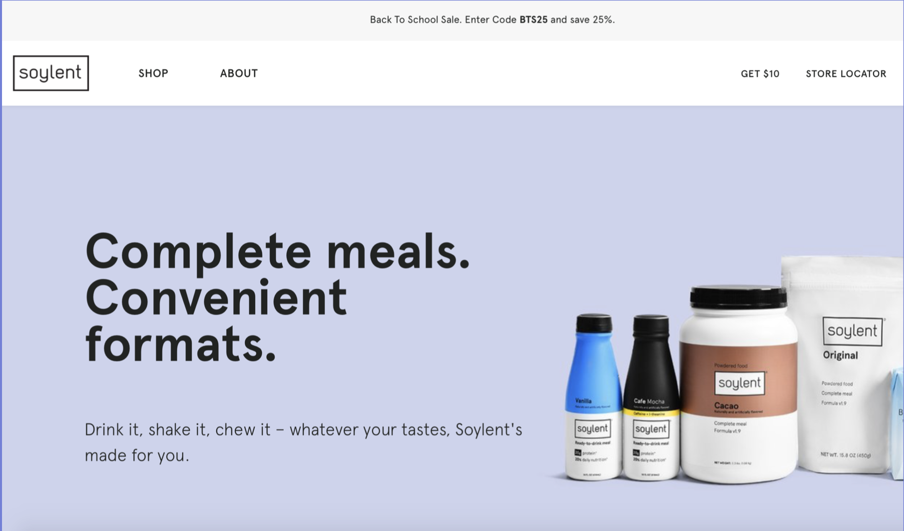

Nell Steinmetz
Student and aspiring UX designer.
Vly Foods
After spending 4 weeks working with Vly Foods in Berlin, Germany, another intern and I redesigned their website using Shopify and Adobe InDesign in order to better represent their voice and branding.
Vly already had a simple website, but they weren’t happy with it as it didn’t reflect their voice or explain who they were and what their product was. We started from scratch and began the ideation process with a week of research. We looked at both local and international competitors producing dairy alternatives and determined what the strengths and weaknesses were within their websites and overall online presence. We decided which information was most important to display on their website and how we should categorize this information into different pages within the website.
We took inspiration from the companies Ritual and Soylent. Their websites are simple, minimalistic, and only display crucial information. Furthermore, Vly was very adamant about using Shopify as the web platform for the website, and Soylent also used Shopify.
At the start of our internship, Vly already had a finalized logo, colors, and typefaces, but did not have finalized packaging. This was an obstacle because a large part of the website’s visual aspect is seeing what the product looks like. At one time we were waiting on information to put into the website instead of just filler text. Even though designing packaging was not part of our internship project, I took the initiative of making filler packaging mockups to use on the temporary website while the packaging was not finalized.


To interact with the final mockup of the website, click here